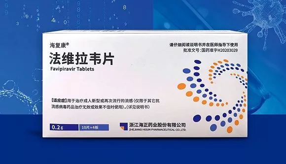
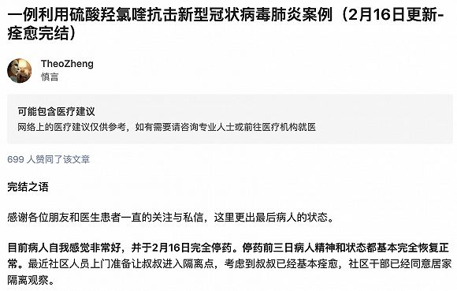

重大突破？金银潭医院院长：康复患者体内含抗体，恳请捐献血浆
原文链接 备份链接 湖北省新冠肺炎疫情防控指挥部13日21时召开新闻发布会，邀请中央指导组医疗救治组专家、北京朝阳医院副院长童朝晖、广州支援武汉协和医院医疗队队长、广州医科大学附属第一医院副院长张挪富、武汉金银潭医院院长张定宇等介绍武汉 …

图片来源：图虫
记者：谢欣 编辑：许悦
“
不要鸡蛋装在一个篮子里，包括法维拉韦、氯喹/羟氯喹、托珠单抗等药物也将进行临床试验，验证其对新冠肺炎的效果。
”
从克力芝到瑞德西韦、从双黄连到各种中药汤剂，自从新冠肺炎疫情爆发以来，业界寻找“特效药”的脚步就未曾停止。
截至2020年2月18日，国内已有超过100项与新型冠状病毒有关的临床试验注册登记，其中绝大多数为药物干预临床研究。除去已纳入国家版诊疗方案的抗病毒药物利巴韦林、洛匹那韦、干扰素及糖皮质激素，和已是众所周知的瑞德西韦外，还有哪些药也存在治疗新冠肺炎的潜力呢？
根据相关报道与药效机理，抗流感病毒药法维拉韦（法匹拉韦favipiravir）、抗疟药氯喹/羟氯喹、自身免疫类疾病药物托珠单抗（Tocilizumab)有可能成为瑞德西韦外的第二种可能。
科技部生物中心主任张新民于2月15日介绍，经过遴选和初筛，选定了100个左右的药物开展新型冠状病毒的体内活性实验。在此基础上，科研攻关组聚焦到少数几个药品，如磷酸氯喹、伦地西韦（瑞德西韦）、法匹拉韦（法维拉韦）等，先后开展临床试验，目前部分药物已经初步显示出良好的临床疗效。
次日，国家药监局有条件批准海正药业法维拉韦片上市，用于抗流感相关适应症治疗。法维拉韦片是一种RNA聚合酶（RdRP）抑制剂类的广谱抗流感病毒药物，而新冠病毒也是一种RNA病毒。
法维拉韦由日本富山化学工业株式会社研发，2014年在日本上市用于治疗新型和复发型流感，成为日本的国家战略储备药物。2016年海正药业与日本富山化学工业株式会社签订了化合物专利独家授权协议，本次获批的法维拉韦片为国内首仿产品，

值得注意的是，从法维拉韦片药品注册正式受理到完成审批仅用了10天左右的时间，据悉是按照新《药品管理法》第26条中所指“对于治疗严重危及生命且无有效治疗手段的疾病以及公共卫生方面急需的药品…可以附条件批准”所进行的优先快速审批。
法维拉韦片的药品注册批件审批结论中也明确提及“为应对新冠病毒肺炎疫情，根据《药品管理法》、《药品注册管理办法》等…附条件批准生产本品”。界面新闻获悉，实际上海正药业也是在新冠肺炎疫情发生后，于春节前进行相关讨论后紧急向国家药监局报产法维拉韦。
海正药业也紧急申报并拿到了法维拉韦片用于治疗新冠肺炎的临床试验批件。公司公告表示，根据《药品管理法》、《药品注册管理办法》和《药品特别审批程序》，经特别专家组评议审核，应急批准本品进行临床试验。适应症为新型冠状病毒肺炎。
2019年新修订的《药品注册管理办法》中增加了《药品加快上市注册》章节，其中第一条规定“在发生突发公共卫生事件的威胁时以及突发公共卫生事件发生后，国家局可以依法决定对突发公共卫生事件应急所需防治药品实现特别审批”。
界面新闻记者此前获悉，目前国家药监局已经开启针对新冠肺炎药品特别审评通道并成立特别专家组进行前期审议。目前已至少有15件各类申请提交，7件提交特别专家组审议、3件报送国家药监局。
据悉，该注册性临床试验将是一个全国多中心随机双盲对照临床试验，计划入组几百例患者，分别在现有标准诊疗方案之下增加法维拉韦片或安慰剂治疗，承办医院包括浙江大学医学院附属第一医院、武汉、深圳等地的医院等。
事实上在此前就已有部分研究者紧急发起了关于法维拉韦在新冠患者的临床应用。由国家感染性疾病临床医学研究中心、深圳市第三人民医院（南方科技大学第二附属医院）发起的法维拉韦治疗新型冠状病毒肺炎的临床试验中，从试验组和对照组共入组80例的初步结果显示：法维拉韦治疗组尚未发现明显的不良反应，副作用明显低于克力芝组，患者依从性好；治疗后抗病毒疗效优于克力芝组。
而此前法维拉韦片的药品注册批件中还提及法维拉韦存在溶出度问题，并要求后续完成餐后生物等效性研究，海正药业方面对界面新闻回应称，法维拉韦与参比制剂的药效学对比没有问题，空腹的结果是等效，餐后的还在做，溶出度的问题相关分析研究已经完成。
2月17日的新闻发布会上，科技部生物中心副主任孙燕荣再次提到“在临床上，我们非常确定地看到了（磷酸氯喹的）疗效，无论从重症化率、退热现象还是肺部的影像好转时间、病毒核酸的转阴时间和转阴率，以及缩短病程等一系列指标，进行系统地、综合研判，用药组优于对照组。”2月18日，武汉大学人民医院也表示20例患者在使用硫酸羟氯喹后明显好转。
氯喹类药物也是目前为数不多的官方表示确定看到临床疗效的候选药物。实际上，羟氯喹与氯喹结构相近，作用机理非常相似，但羟氯喹比起氯喹半衰期更短，代谢较快，毒副作用较小，在临床使用的安全性、耐受性方面都有明显的提升。两者治疗作用相近，因此目前羟氯喹的临床应用也远比氯喹广泛。
界面新闻获悉，实际上这两种药物目前国内主要产能均由上海医药提供，其中氯喹此前只有上海医药在正常生产，在新冠肺炎疫情发生之前主要由世界卫生组织采购，以及由卫健委疾控中心收作战略储备。
不过随着氯喹的新冠肺炎的治疗作用被披露，国内多家拥有氯喹生产批文厂家也相继宣布复产。广东省已停产氯喹20年，但是截至2月18日上午，广药集团控股子公司光华药业宣布已经产出首批50万片磷酸氯喹。同时，截至2月19日广东众生药业也已完成19.8万片磷酸氯喹的生产。
羟氯喹上，国内则仅有原研进口赛诺菲与上海医药两家拥有制剂生产批文，上海医药2019年半年报显示，羟氯喹（纷乐）国内市场占有率达76.67%。据文献报道，羟氯喹抗SARS、MERS病毒活性与氯喹基本相当。
不过，氯喹类药物目前治疗新冠肺炎的机制尚不清楚。综合各种文献与报道，可能有以下几种：
抗病毒：通过升高胞质内pH值，抑制包括冠状病毒在内的几种病毒复制的pH依赖步骤；或是通过影响丝裂原活化蛋白激酶(MAPK)和细胞外信号调节激酶(ERK)的活化，抑制新合成蛋白的脱包和/或翻译后修饰，从而抑制冠状病毒的感染和复制。
免疫调节：通过使胞质内的pH值升高，降低细胞表面抗原多肽的量，阻止抗原的加工。
抗炎：硫酸羟氯喹呈弱碱性，可升高溶酶体pH值，从而抑制促炎细胞因子（TNF-α、IFN-γ、IL-2和IL-4）的产生。
这几种机制可能是用时在起作用的，在不同的阶段给新冠病毒的进入细胞与复制制造障碍，并抑制细胞因子风暴的发生。
2003年，《柳叶刀·传染病学》杂志曾发表文章谈到氯喹的抗病毒作用，建议可以将氯喹老药新用拿来治疗SARS。文中也曾提及氯喹可以抑制肿瘤坏死因子和细胞因子白介素IL-6的产生和释放，这也意味着氯喹有可能可以起到抑制目前导致许多重症新冠肺炎病人死亡的直接原因——细胞因子风暴的作用。
据了解，最开始是北京的科研单位在筛选可用老药的过程中筛选到了氯喹，科技部为此于1月29日联系上海医药。上海医药子公司上药中西随即调取了全部库存2.5万多盒氯喹，连夜送至科技部用于开展研究试验。
氯喹在其后的体外研究和临床试验中也都表现出一定的抗新冠病毒活性和疗效。由于羟氯喹与氯喹的化合物分子结构非常接近，但安全性要好很多，对于已有适应症的作用机理和疗效也相似，因此羟氯喹也很快进入了研究者的视野。
实际上，早在官方公开肯定氯喹/羟氯喹的治疗效果之前，就已有患者自行服用并且取得了积极效果。
知乎用户“TheoZheng”在知乎上记载了已订婚女友的父亲近半个月来自行服用羟氯喹治疗的经历。患者于1月24日开始发病，随后几天持续发热、频发干咳，实验室血液鉴定结果和CT结果显示病症高度疑似新冠肺炎，后由于武汉当地收治能力不够只能进行居家隔离。

2月5日起，结合此前一些文献报道等依据，患者开始服用羟氯喹治疗，随后病情逐步稳定并出现好转。2月13日血检与CT结果积极，患者于2月16日完全停药。停药前三日精神和状态都基本完全恢复正常。目前经社区干部同意，采取居家隔离观察措施。
目前上海市公共卫生临床中心、上海交大附属瑞金医院、武汉大学人民医院、北京大学第一医院、重庆医科大学附属第一医院和第二医院等都已相继启动了羟氯喹治疗新冠病毒肺炎的临床研究，试验对象包括轻中度患者、重症患者和危重症患者。
目前在推测氯喹类药物的治疗新冠肺炎机制时有一点便是，其可以抑制肿瘤坏死因子和几种细胞因子的产生和释释放。
根据此前国内媒体及《柳叶刀》相关报道，许多危重症新冠肺炎患者在后体内会突然发生炎症风暴，即细胞因子释放综合征，又称为细胞因子风暴（cytokine storm），这会导致患者病情在短时间内急剧恶化。
简单来说，在新冠病毒入侵人体后，人体的自我免疫开关被打开，抗击病毒的免疫细胞开始向外释放各种细胞因子刺激更多免疫细胞参与免疫，这些被刺激的免疫细胞也会继续释放更多细胞因子。
但在如SARS、埃博拉病毒引发的感染中，大量而迅速的细胞因子产生会形成细胞因子风暴，最终引来的是人体免疫系统对人体自身的攻击，它就像一种针对病毒的“自杀式攻击”，最终会导致低血压、凝血障碍、心肺肝肾等重要器官功能衰竭以及急性呼吸窘迫综合征，危及生命。
《柳叶刀》1月25日发表的由武汉金银潭医院、中日友好医院、协和医科大学、北京地坛医院、武汉同济医院、武汉市中心医院、武汉大学中南医院、北京大学第一医院、北京大学人民医院等专家共同撰写《2019武汉新型冠状病毒临床特点》中也提及：
“ICU患者和非ICU患者的初始血浆IL1B，IL1RA，IL7，IL8，IL9，IL10，碱性FGF，GCSF，GMCSF，IFNγ，IP10，MCP1，MIP1A，MIP1B，PDGF，TNFα和VEGF浓度均高于在健康的成年人中。健康成年人和感染2019-nCoV的患者的血浆IL5，IL12p70，IL15，嗜酸性粒细胞趋化因子和RANTES水平相似。ICU患者与非ICU患者之间的进一步比较表明，ICU患者的IL2，IL7，IL10，GCSF，IP10，MCP1，MIP1A和TNFα的血浆浓度高于非ICU患者。”
即在ICU患者与非ICU患者中，均出现了细胞因子显著升高的情况，其中某些细胞因子在重症ICU患者体内浓度更高。
中国临床试验注册中心官网显示，由中国科学技术大学附属第一医院（安徽省立医院）发起的“托珠单抗在新型冠状病毒肺炎(COVID-19)中的有效性及安全性的多中心、随机对照临床研究”已预约登记。旨在评估托珠单抗治疗普通型NCP（含重症高危因素）及重型NCP患者的有效性和安全性。

托珠单抗（雅美罗）是罗氏制药一款白介素6（IL-6)拮抗生物药，主要用于类风关等自身免疫性疾病，具有抑制免疫系统功能的作用。值得注意的是，2017年全球首款CAR-T疗法在美国获批时，托珠单抗也同时获批用于治疗CAR-T相关重度细胞因子释放综合征。也就是说，托珠单抗实际上已证明自身对于细胞因子风暴的治疗能力。
但这并不意味着托珠单抗就一定可以治疗新冠肺炎引发的细胞因子风暴。
药物研发从业人士柯楠对界面新闻记者表示，根据《柳叶刀》1月25日的这篇研究结果，新冠肺炎患者主要增高的细胞因子并不包括IL-6，这意味着不同病因的细胞因子增高综合征发病机制或许并不完全相同，未必可以照搬托珠单抗治疗。不过，论文补充材料中提供了27种细胞因子的测定结果，有几例重症患者IL-6增高极其显著，此类患者使用托珠单抗有效的可能性较大。而中国科学技术大学附属第一医院（安徽省立医院）发起的临床研究中也限定仅纳入IL-6升高患者，应当也是考虑到了背后的机制与风险。
但柯楠也表示，在细胞因子释放综合征的发生机制上，IL-6位置比较核心，抑制了IL-6其他的应该就会稳定。
此前针对肿瘤治疗诱发的细胞因子释放综合征的研究表明，IL-6、IL-10与干扰素γ（IFN-γ）这三种细胞因子在发生机制中起到了举足轻重的作用。
他还提醒，托珠单抗的药品说明“注意事项”部分第一条，就是免疫抑制后继发严重感染，这也被FDA标注以“黑框警告”，意味着监管机构不建议将托珠单抗与其他免疫抑制药物合用，要求一旦发生严重感染，立即停用托珠单抗。另据其了解，武汉地区许多医生并未处方过托珠单抗，缺乏临床使用经验也是一个现实问题。
柯楠分析，根据补充材料的数据，肿瘤坏死因子α（TNF α）也是再应对新冠肺炎危重症患者的细胞因子风暴所值得尝试的靶点。这一靶点上聚集了多款知名药物，包括阿达木单抗、依那西普、英夫利昔单抗等。
尽管如此，即使是在疫情肆虐急需特效药之时，现代医学所遵循的询证与严谨依然在提醒着我们，无论是哪一款药物，都应经过严格的临床试验检验，明确其安全性和有效性。
未经授权 禁止转载

原文链接 备份链接 湖北省新冠肺炎疫情防控指挥部13日21时召开新闻发布会，邀请中央指导组医疗救治组专家、北京朝阳医院副院长童朝晖、广州支援武汉协和医院医疗队队长、广州医科大学附属第一医院副院长张挪富、武汉金银潭医院院长张定宇等介绍武汉 …
原文链接 备份链接 【财新网】（记者 邸宁）新冠疫情防控进入关键时期，重症病例不断增加，降低病死率，除了对重症患者进行支持救治，预防轻症患者疾病进展同样重要。 根据国家卫健委官方数据，截至2月9日24时，新冠病毒新增确诊病例3062 …
原文链接 备份链接 美国一个新冠肺炎患者使用瑞德西韦治愈的消息发布后，流传出很多该药有“奇效”的消息，但都仅仅是“美好的愿望”。 新冠肺炎确诊、疑似、死亡人数都在不断上升，人们太需要看到希望了。 瑞德西韦的前一代药物，对治疗猫冠状病 …
原文链接 备份链接 2月17日，湖北省孝感市孝南区妇幼保健院，医护人员在进行体温测量。中青报·中青网见习记者 鲁冲/摄 本文约3780字 预计阅读时间10分钟 口述：四川大学华西医院重症医学科主任 康 焰 整理：中青报·中青网记者 王 …
原文链接 备份链接 2 月 17 日，《柳叶刀 · 呼吸医学》（_The Lancet Respiratory Medicine_）在线发表了首份基于尸检样本的新冠肺炎病理学报告。 该论文通讯作者之一为中科院院士、解放军总医院第五医学中心 …